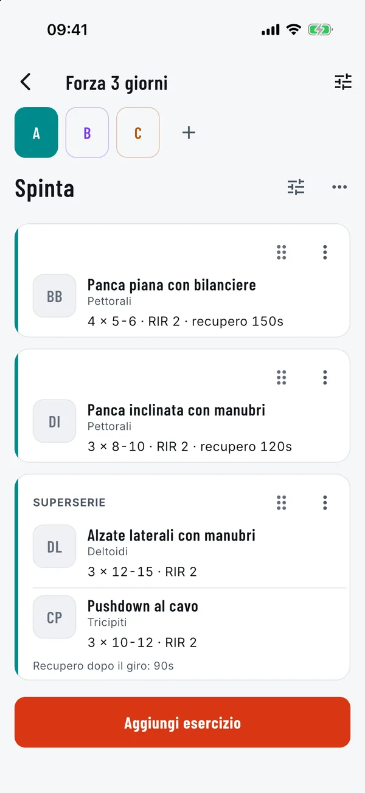

APianifica
Una scheda fatta come la pensi tu
Costruisci fino a cinque giorni, ognuno con il suo colore, e riempili di blocchi: serie normali, superserie, circuiti e dropset. Imposta serie, ripetizioni, RIR e recupero per ogni esercizio.
- Trascina per riordinare, duplica o elimina giorni e schede
- Oltre 1.300 esercizi, cercabili per nome, muscolo o attrezzo
- Aggiungi i tuoi esercizi personalizzati
